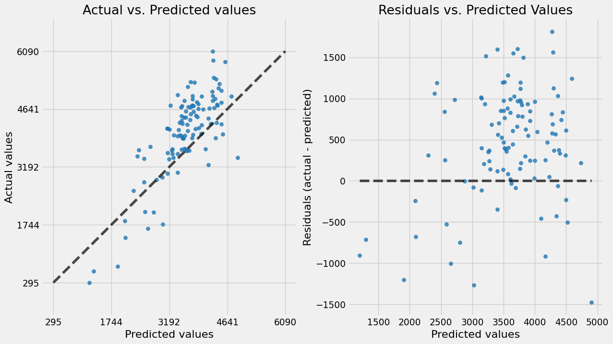

import os
os.environ["GIT_PYTHON_REFRESH"] = "quiet"Exploratory Data Analysis on Rice Yield Dataset
In this project, we are going to explore the cleaned dataset by visualizing attributes, imputing missing values, checking data types and so on.
Chapter 1: Data Import
import pandas as pd
import numpy as np
import random
import warnings
warnings.filterwarnings('ignore')
SEED = 42
random.seed(SEED)
np.random.seed(SEED)
pd.set_option('display.float_format', '{:.2f}'.format)import sys
from pathlib import Path
# Add src/ to Python path
sys.path.append(str(Path.cwd().parent / "src"))df = pd.read_csv('..\\data\\combined_file\\combined.csv')
# df.head()df.columnsIndex(['year', 'dist_name', 'actual_evapotranspiration', 'rice_area_1000_ha',
'rice_production_1000_tons', 'rice_yield_kg_per_ha',
'rice_irrigated_area_1000_ha', 'maximum_temperature',
'minimum_temperature', 'precipitation',
'nitrogen_kharif_consumption_tons', 'nitrogen_rabi_consumption_tons',
'phosphate_kharif_consumption_tons', 'phosphate_rabi_consumption_tons',
'potash_kharif_consumption_tons', 'potash_rabi_consumption_tons',
'total_kharif_consumption_tons', 'total_rabi_consumption_tons',
'water_deficit'],
dtype='object')pd.DataFrame(df.columns, columns=['Parameters / Columns'])| Parameters / Columns | |
|---|---|
| 0 | year |
| 1 | dist_name |
| 2 | actual_evapotranspiration |
| 3 | rice_area_1000_ha |
| 4 | rice_production_1000_tons |
| 5 | rice_yield_kg_per_ha |
| 6 | rice_irrigated_area_1000_ha |
| 7 | maximum_temperature |
| 8 | minimum_temperature |
| 9 | precipitation |
| 10 | nitrogen_kharif_consumption_tons |
| 11 | nitrogen_rabi_consumption_tons |
| 12 | phosphate_kharif_consumption_tons |
| 13 | phosphate_rabi_consumption_tons |
| 14 | potash_kharif_consumption_tons |
| 15 | potash_rabi_consumption_tons |
| 16 | total_kharif_consumption_tons |
| 17 | total_rabi_consumption_tons |
| 18 | water_deficit |
The target variable is rice_yield_kg_per_ha. Every other column is a feature that we’ll be using to predict the target.
# df.info()There are no null values in the dataset. The method .info() only counts numpy.nan as null values but not -1.
pd.DataFrame(df['dist_name'].unique(), columns=['Districts'])| Districts | |
|---|---|
| 0 | Coimbatore |
| 1 | Cuddalore |
| 2 | Dharmapuri |
| 3 | Dindigul |
| 4 | Erode |
| 5 | Kancheepuram |
| 6 | Kanyakumari |
| 7 | Madurai |
| 8 | Pudukkottai |
| 9 | Ramananthapuram |
| 10 | Salem |
| 11 | Sivagangai |
| 12 | Thanjavur |
| 13 | The Nilgiris |
| 14 | Thirunelveli |
| 15 | Thoothukudi |
| 16 | Tiruchirappalli |
| 17 | Tiruvannamalai |
| 18 | Vellore |
| 19 | Virudhunagar |
| 20 | Nagapattinam |
| 21 | Villupuram |
| 22 | Karur |
| 23 | Perambular |
| 24 | Theni |
| 25 | Thiruvallur |
| 26 | Thiruvarur |
| 27 | Namakkal |
| 28 | Chennai |
| 29 | Krishnagiri |
| 30 | Ariyalur |
| 31 | Tiruppur |
# Renaming the column names for better readability
df.rename(columns={
'rice_area_1000_ha': 'rice_area',
'rice_production_1000_tons': 'rice_production',
'rice_yield_kg_per_ha': 'rice_yield',
'avg_evapotranspiration_mm': 'avg_act_evapotranspiration',
'avg_pot_evapotranspiration_mm': 'avg_pot_evapotranspiration',
'rice_irrigated_area_1000_ha': 'rice_irrigated_area',
'avg_precipitation_mm': 'avg_precipitation',
'avg_water_deficit_mm': 'avg_water_deficit',
'nitrogen_kharif_consumption_tons': 'nitrogen_kharif',
'nitrogen_rabi_consumption_tons': 'nitrogen_rabi',
'phosphate_kharif_consumption_tons': 'phosphate_kharif',
'phosphate_rabi_consumption_tons': 'phosphate_rabi',
'potash_kharif_consumption_tons': 'potash_kharif',
'potash_rabi_consumption_tons': 'potash_rabi',
'total_kharif_consumption_tons': 'total_kharif',
'total_rabi_consumption_tons': 'total_rabi'
},
inplace=True)We can observe that the column names have been changed and it is easy to read.
df.drop(columns=['nitrogen_kharif',
'nitrogen_rabi',
'phosphate_kharif',
'phosphate_rabi',
'potash_kharif',
'potash_rabi'],
inplace=True)# df.columnsimport seaborn as sns
import matplotlib.pyplot as pltn_years = df['year'].nunique()
min_year= df['year'].min()
max_year = df['year'].max()
print(f"The rice yield dataset has {n_years} years' data with minimum year: {min_year} and maximum year: {max_year}")The rice yield dataset has 26 years' data with minimum year: 1990 and maximum year: 2015n_districts = df['dist_name'].nunique()
print(f'There are {n_districts} unique districts in the dataset')There are 32 unique districts in the datasetdistrict_data_count = pd.DataFrame(df['dist_name'].value_counts())
district_data_count| count | |
|---|---|
| dist_name | |
| Coimbatore | 26 |
| Cuddalore | 26 |
| Dharmapuri | 26 |
| Dindigul | 26 |
| Erode | 26 |
| Kancheepuram | 26 |
| Kanyakumari | 26 |
| Madurai | 26 |
| Pudukkottai | 26 |
| Ramananthapuram | 26 |
| Salem | 26 |
| Sivagangai | 26 |
| Thanjavur | 26 |
| The Nilgiris | 26 |
| Thirunelveli | 26 |
| Thoothukudi | 26 |
| Tiruchirappalli | 26 |
| Tiruvannamalai | 26 |
| Vellore | 26 |
| Virudhunagar | 26 |
| Nagapattinam | 24 |
| Villupuram | 22 |
| Karur | 20 |
| Perambular | 20 |
| Theni | 20 |
| Thiruvallur | 20 |
| Thiruvarur | 20 |
| Namakkal | 19 |
| Krishnagiri | 13 |
| Chennai | 10 |
| Ariyalur | 8 |
| Tiruppur | 5 |
More than half of the districts have data for all the 26 years. So, we are removing some districts that do not have enough data.
low_data_districts = district_data_count[district_data_count['count'] <= 20].index
low_data_districtsIndex(['Karur', 'Perambular', 'Theni', 'Thiruvallur', 'Thiruvarur', 'Namakkal',
'Krishnagiri', 'Chennai', 'Ariyalur', 'Tiruppur'],
dtype='object', name='dist_name')district_mask = ~df['dist_name'].isin(low_data_districts)
district_mask0 True
1 True
2 True
3 True
4 True
...
716 False
717 True
718 True
719 True
720 True
Name: dist_name, Length: 721, dtype: boolfiltered_df = df[district_mask]
filtered_df['dist_name'].unique()array(['Coimbatore', 'Cuddalore', 'Dharmapuri', 'Dindigul', 'Erode',
'Kancheepuram', 'Kanyakumari', 'Madurai', 'Pudukkottai',
'Ramananthapuram', 'Salem', 'Sivagangai', 'Thanjavur',
'The Nilgiris', 'Thirunelveli', 'Thoothukudi', 'Tiruchirappalli',
'Tiruvannamalai', 'Vellore', 'Virudhunagar', 'Nagapattinam',
'Villupuram'], dtype=object)filtered_df.info()<class 'pandas.core.frame.DataFrame'>
Index: 566 entries, 0 to 720
Data columns (total 13 columns):
# Column Non-Null Count Dtype
--- ------ -------------- -----
0 year 566 non-null int64
1 dist_name 566 non-null object
2 actual_evapotranspiration 566 non-null float64
3 rice_area 566 non-null float64
4 rice_production 566 non-null float64
5 rice_yield 566 non-null float64
6 rice_irrigated_area 566 non-null float64
7 maximum_temperature 566 non-null float64
8 minimum_temperature 566 non-null float64
9 precipitation 566 non-null float64
10 total_kharif 566 non-null float64
11 total_rabi 566 non-null float64
12 water_deficit 566 non-null float64
dtypes: float64(11), int64(1), object(1)
memory usage: 61.9+ KBfiltered_df['year'].nunique()26Chapter 2: Feature Engineering
# The `year_rescale` feature contains values between 1 and 26 which corresponds to 1990 and 2015.
filtered_df['year_rescale'] = abs((filtered_df['year'].max() + 1) - filtered_df['year'])
filtered_df['year_rescale'].min(), filtered_df['year_rescale'].max()(np.int64(1), np.int64(26))Chapter 3: Distribution of Variables
from shiny.express import input, render, ui
from htmltools import TagList, tagsdist_variables = ['dist_name',
'actual_evapotranspiration',
'rice_area',
'rice_production',
'rice_yield',
'rice_irrigated_area',
'maximum_temperature',
'minimum_temperature',
'precipitation',
'water_deficit',
'total_kharif',
'total_rabi'
]
dist_remarks = {
"dist_name": "Most of the districts have 26 years' data, except a few.",
"actual_evapotranspiration": "Almost normally distributed with no outliers or skewness.",
"rice_area": "The data is approximately normal with right skew.",
"rice_production": "The data is approximately normal with slight right skew.",
"rice_yield": 'The `rice_yield` variable is approximately normal with left skew.',
"rice_irrigated_area": "The data is approximately normal with right skew.",
"maximum_temperature": "Distribution is bi-modal",
"minimum_temperature": "Distribution is bi-modal.",
"precipitation": "The data is approximately normal with slight right skew.",
"water_deficit": "Almost normally distributed with no outliers or skewness.",
"total_kharif": "Almost normally distributed",
"total_rabi": "Almost normally distributed"
}# UI elements
ui.input_select("dist_var", "Choose Variable", choices=dist_variables)
# Plot output
@render.plot(width=900, height=400)
def dist_plot():
col = input.dist_var()
if col != 'dist_name':
fig, ax = plt.subplots(1, 2)
plt.style.use('fivethirtyeight')
# Axes 1: original distribution
sns.distplot(filtered_df[col], ax=ax[0]);
ax[0].set_xlabel(col, fontsize=11)
ax[0].set_ylabel("Density", fontsize=11)
# Axes 2: box plot of the original distribution
sns.boxplot(filtered_df[col], ax=ax[1]);
ax[1].set_ylabel(col, fontsize=11)
else:
plt.style.use('fivethirtyeight')
fig, ax = plt.subplots(1)
filtered_df[col].value_counts().plot(kind='bar');
ax.set_ylim(0, 27)
ax.set_yticks(range(1, 27, 5))
ax.set_xlabel('') # Hide the x-axis label
ax.set_xticklabels(ax.get_xticklabels(), fontsize=11)
ax.set_yticklabels(ax.get_yticklabels(), fontsize=11)
ax.xaxis.grid(False)
# Remarks output
@render.ui
def dist_remarks_ui():
col = input.dist_var()
return TagList(tags.p("Remarks for ", tags.code(col), ": ", tags.strong(dist_remarks.get(col))))Chapter 4: Correlation Analysis
corr_variables = ['actual_evapotranspiration',
'rice_area',
'rice_production',
'rice_irrigated_area',
'maximum_temperature',
'minimum_temperature',
'precipitation',
'water_deficit',
'total_kharif',
'total_rabi'
]
corr_remarks = {
"actual_evapotranspiration": "No Correlation",
"rice_area": "No Correlation",
"rice_production": "No Correlation.",
"rice_irrigated_area": "No Correlation.",
"maximum_temperature": "No Correlation",
"minimum_temperature": "No Correlation.",
"precipitation": "No Correlation.",
"water_deficit": "No Correlation.",
"total_kharif": "No Correlation",
"total_rabi": "No Correlation"
}# UI elements
ui.input_select("corr_var", "Choose Variable", choices=corr_variables)
@render.plot(width=900, height=400)
def corr_plot():
col = input.corr_var()
corr = filtered_df['rice_yield'].corr(filtered_df[col])
# print(f'Correlation: {corr:.2f}')
# 2. Scatter plot with regression line
plt.style.use('fivethirtyeight')
fig, ax = plt.subplots(1)
sns.regplot(x=col, y='rice_yield', data=filtered_df, ax=ax)
plt.title(f'Scatter Plot (Correlation: {corr:.2f})', fontdict={'fontsize': 12, 'fontweight': 'bold', 'family': 'Arial'})
ax.set_xlabel(ax.get_xlabel(), fontsize=11)
ax.set_ylabel(ax.get_ylabel(), fontsize=11)
ax.set_xticklabels(ax.get_xticklabels(), fontsize=10)
ax.set_yticklabels(ax.get_yticklabels(), fontsize=10)
@render.ui
def corr_remarks_ui():
col = input.corr_var()
return TagList(tags.p("Remarks for ", tags.code(col), ": ", tags.strong(corr_remarks.get(col))))corr_df = filtered_df.drop(columns=['dist_name', 'year', 'year_rescale']).corr()import numpy as np
import matplotlib.colors as mcolors
@render.plot(width=900, height=700)
def cor_plot():
plt.style.use('fivethirtyeight')
fig, ax = plt.subplots(1)
# sky_blue_cmap = sns.light_palette('deepskyblue', as_cmap=True, reverse=True)
cmap = mcolors.LinearSegmentedColormap.from_list('custom_deepskyblue', ['deepskyblue', 'white', 'deepskyblue'], N=100)
norm = mcolors.CenteredNorm()
# Plot the heatmap
sns.heatmap(corr_df,
annot=True,
cmap=cmap,
vmin=-1,
vmax=1,
fmt='.1f',
mask=np.triu(np.ones_like(corr_df, dtype=bool)),
norm=norm
)
plt.title('Heatmap of Correlation Coefficient Matrix', fontdict={'fontsize': 12, 'fontweight': 'bold', 'family': 'Arial'});
ax.set_xticklabels(ax.get_xticklabels(), fontsize=10);
ax.set_yticklabels(ax.get_yticklabels(), fontsize=10);
ax.xaxis.grid(False)
ax.yaxis.grid(False)Chapter 5: Split Data - Train and Test
filtered_df = filtered_df.drop(columns=['year_rescale'])df = filtered_df.sort_values(['year', 'dist_name'])
df
# Split
train_df = df[df['year'] <= 2010].copy()
test_df = df[df['year'] > 2010].copy()| year | dist_name | actual_evapotranspiration | rice_area | rice_production | rice_yield | rice_irrigated_area | maximum_temperature | minimum_temperature | precipitation | total_kharif | total_rabi | water_deficit | |
|---|---|---|---|---|---|---|---|---|---|---|---|---|---|
| 0 | 1990 | Coimbatore | 67.75 | 18.16 | 62.75 | 3455.00 | 18.16 | 30.11 | 20.84 | 82.44 | 31828.00 | 35310.00 | 67.48 |
| 1 | 1990 | Cuddalore | 88.41 | 179.94 | 611.61 | 3399.00 | 177.17 | 33.09 | 24.18 | 96.53 | 38261.00 | 50444.00 | 70.68 |
| 2 | 1990 | Dharmapuri | 61.98 | 29.93 | 96.18 | 3213.00 | 29.84 | 32.10 | 21.22 | 63.40 | 6668.00 | 7921.00 | 85.49 |
| 3 | 1990 | Dindigul | 62.80 | 21.95 | 80.56 | 3670.00 | 21.95 | 31.14 | 21.54 | 73.56 | 7457.00 | 9282.00 | 88.09 |
| 4 | 1990 | Erode | 47.85 | 64.26 | 277.26 | 4315.00 | 64.26 | 31.64 | 21.31 | 50.69 | 19292.00 | 27091.00 | 98.29 |
| ... | ... | ... | ... | ... | ... | ... | ... | ... | ... | ... | ... | ... | ... |
| 715 | 2015 | Tiruchirappalli | 86.83 | 58.57 | 244.21 | 4170.00 | 58.21 | 34.11 | 24.42 | 94.82 | 24340.00 | 41598.00 | 68.07 |
| 717 | 2015 | Tiruvannamalai | 88.50 | 138.88 | 550.74 | 3966.00 | 138.72 | 33.49 | 23.64 | 92.60 | 15744.00 | 49142.00 | 56.30 |
| 718 | 2015 | Vellore | 77.57 | 51.77 | 202.22 | 3906.00 | 51.77 | 32.88 | 22.77 | 82.61 | 17293.00 | 43877.00 | 63.75 |
| 719 | 2015 | Villupuram | 91.90 | 182.30 | 773.31 | 4242.00 | 181.37 | 33.70 | 24.26 | 99.12 | 32056.00 | 71736.00 | 58.99 |
| 720 | 2015 | Virudhunagar | 87.69 | 28.61 | 100.61 | 3517.00 | 28.22 | 34.37 | 25.51 | 99.96 | 4618.00 | 10910.00 | 69.40 |
566 rows × 13 columns
train_df.head(30)| year | dist_name | actual_evapotranspiration | rice_area | rice_production | rice_yield | rice_irrigated_area | maximum_temperature | minimum_temperature | precipitation | total_kharif | total_rabi | water_deficit | |
|---|---|---|---|---|---|---|---|---|---|---|---|---|---|
| 0 | 1990 | Coimbatore | 67.75 | 18.16 | 62.75 | 3455.00 | 18.16 | 30.11 | 20.84 | 82.44 | 31828.00 | 35310.00 | 67.48 |
| 1 | 1990 | Cuddalore | 88.41 | 179.94 | 611.61 | 3399.00 | 177.17 | 33.09 | 24.18 | 96.53 | 38261.00 | 50444.00 | 70.68 |
| 2 | 1990 | Dharmapuri | 61.98 | 29.93 | 96.18 | 3213.00 | 29.84 | 32.10 | 21.22 | 63.40 | 6668.00 | 7921.00 | 85.49 |
| 3 | 1990 | Dindigul | 62.80 | 21.95 | 80.56 | 3670.00 | 21.95 | 31.14 | 21.54 | 73.56 | 7457.00 | 9282.00 | 88.09 |
| 4 | 1990 | Erode | 47.85 | 64.26 | 277.26 | 4315.00 | 64.26 | 31.64 | 21.31 | 50.69 | 19292.00 | 27091.00 | 98.29 |
| 5 | 1990 | Kancheepuram | 90.60 | 231.96 | 743.65 | 3206.00 | 209.69 | 33.21 | 23.87 | 96.47 | 23123.00 | 43988.00 | 66.67 |
| 6 | 1990 | Kanyakumari | 83.56 | 41.23 | 127.82 | 3100.00 | 41.23 | 30.07 | 23.20 | 109.54 | 6379.00 | 8080.00 | 51.45 |
| 7 | 1990 | Madurai | 66.38 | 119.15 | 409.55 | 3437.00 | 119.15 | 33.48 | 24.00 | 78.07 | 30619.00 | 43084.00 | 95.56 |
| 8 | 1990 | Pudukkottai | 72.09 | 68.44 | 172.55 | 2521.00 | 64.31 | 33.27 | 24.54 | 82.71 | 5000.00 | 13785.00 | 91.29 |
| 9 | 1990 | Ramananthapuram | 59.57 | 151.27 | 263.44 | 1742.00 | 64.08 | 33.36 | 25.64 | 72.39 | 1643.00 | 7235.00 | 109.78 |
| 10 | 1990 | Salem | 63.67 | 30.38 | 101.04 | 3326.00 | 30.08 | 32.55 | 21.84 | 67.66 | 22369.00 | 21460.00 | 88.84 |
| 11 | 1990 | Sivagangai | 70.69 | 89.34 | 203.12 | 2274.00 | 70.72 | 33.46 | 24.82 | 82.96 | 2339.00 | 6993.00 | 93.43 |
| 12 | 1990 | Thanjavur | 78.58 | 459.42 | 1403.46 | 3055.00 | 444.70 | 32.84 | 24.36 | 90.17 | 53428.00 | 72854.00 | 79.86 |
| 13 | 1990 | The Nilgiris | 69.05 | 2.78 | 6.89 | 2478.00 | 0.16 | 24.05 | 14.74 | 103.64 | 5822.00 | 4496.00 | 44.25 |
| 14 | 1990 | Thirunelveli | 67.39 | 101.40 | 398.26 | 3928.00 | 101.40 | 32.35 | 24.38 | 87.34 | 17844.00 | 23418.00 | 86.36 |
| 15 | 1990 | Thoothukudi | 48.12 | 28.79 | 136.00 | 4724.00 | 28.79 | 33.95 | 25.58 | 60.10 | 5391.00 | 8356.00 | 120.16 |
| 16 | 1990 | Tiruchirappalli | 61.63 | 92.68 | 299.42 | 3231.00 | 78.72 | 33.63 | 23.69 | 70.52 | 30997.00 | 48525.00 | 100.93 |
| 17 | 1990 | Tiruvannamalai | 78.96 | 53.32 | 164.54 | 3086.00 | 53.32 | 32.91 | 22.83 | 81.15 | 7723.00 | 15284.00 | 73.58 |
| 18 | 1990 | Vellore | 69.99 | 34.57 | 100.85 | 2917.00 | 144.57 | 32.31 | 21.92 | 70.94 | 16956.00 | 27208.00 | 77.91 |
| 19 | 1990 | Virudhunagar | 61.77 | 36.78 | 123.49 | 3358.00 | 33.76 | 33.95 | 25.06 | 74.63 | 7463.00 | 15531.00 | 104.28 |
| 20 | 1991 | Coimbatore | 77.13 | 21.29 | 73.83 | 3468.00 | 21.29 | 30.11 | 20.83 | 103.49 | 29056.00 | 28827.00 | 56.74 |
| 21 | 1991 | Cuddalore | 83.84 | 233.31 | 827.59 | 3547.00 | 229.49 | 33.10 | 24.19 | 96.56 | 32555.00 | 49602.00 | 73.26 |
| 22 | 1991 | Dharmapuri | 71.76 | 76.60 | 244.43 | 3191.00 | 76.45 | 32.12 | 21.23 | 86.95 | 7044.00 | 10113.00 | 76.89 |
| 23 | 1991 | Dindigul | 64.33 | 19.72 | 72.30 | 3666.00 | 19.67 | 31.15 | 21.55 | 67.07 | 6828.00 | 11603.00 | 83.59 |
| 24 | 1991 | Erode | 59.68 | 75.56 | 285.82 | 3783.00 | 75.47 | 31.65 | 21.31 | 66.86 | 20893.00 | 23793.00 | 86.68 |
| 25 | 1991 | Kancheepuram | 84.91 | 264.41 | 894.59 | 3383.00 | 242.20 | 33.23 | 23.88 | 101.79 | 24619.00 | 35790.00 | 71.28 |
| 26 | 1991 | Kanyakumari | 86.28 | 40.57 | 143.22 | 3530.00 | 40.57 | 30.06 | 23.18 | 114.60 | 6872.00 | 9338.00 | 46.24 |
| 27 | 1991 | Madurai | 67.91 | 102.54 | 363.75 | 3547.00 | 102.54 | 33.50 | 24.01 | 66.79 | 31572.00 | 34850.00 | 90.14 |
| 28 | 1991 | Pudukkottai | 71.02 | 76.11 | 215.02 | 2825.00 | 72.95 | 33.28 | 24.54 | 72.01 | 5170.00 | 19695.00 | 88.81 |
| 29 | 1991 | Ramananthapuram | 61.12 | 137.38 | 69.47 | 506.00 | 56.53 | 33.38 | 25.65 | 57.74 | 1948.00 | 9741.00 | 103.17 |
train_df.info()<class 'pandas.core.frame.DataFrame'>
Index: 456 entries, 0 to 566
Data columns (total 13 columns):
# Column Non-Null Count Dtype
--- ------ -------------- -----
0 year 456 non-null int64
1 dist_name 456 non-null object
2 actual_evapotranspiration 456 non-null float64
3 rice_area 456 non-null float64
4 rice_production 456 non-null float64
5 rice_yield 456 non-null float64
6 rice_irrigated_area 456 non-null float64
7 maximum_temperature 456 non-null float64
8 minimum_temperature 456 non-null float64
9 precipitation 456 non-null float64
10 total_kharif 456 non-null float64
11 total_rabi 456 non-null float64
12 water_deficit 456 non-null float64
dtypes: float64(11), int64(1), object(1)
memory usage: 49.9+ KBtest_df.info()<class 'pandas.core.frame.DataFrame'>
Index: 110 entries, 568 to 720
Data columns (total 13 columns):
# Column Non-Null Count Dtype
--- ------ -------------- -----
0 year 110 non-null int64
1 dist_name 110 non-null object
2 actual_evapotranspiration 110 non-null float64
3 rice_area 110 non-null float64
4 rice_production 110 non-null float64
5 rice_yield 110 non-null float64
6 rice_irrigated_area 110 non-null float64
7 maximum_temperature 110 non-null float64
8 minimum_temperature 110 non-null float64
9 precipitation 110 non-null float64
10 total_kharif 110 non-null float64
11 total_rabi 110 non-null float64
12 water_deficit 110 non-null float64
dtypes: float64(11), int64(1), object(1)
memory usage: 12.0+ KBdf['split'] = df['year'].apply(lambda x: "Train" if x <= 2010 else "Test")
df.tail()| year | dist_name | actual_evapotranspiration | rice_area | rice_production | rice_yield | rice_irrigated_area | maximum_temperature | minimum_temperature | precipitation | total_kharif | total_rabi | water_deficit | split | |
|---|---|---|---|---|---|---|---|---|---|---|---|---|---|---|
| 715 | 2015 | Tiruchirappalli | 86.83 | 58.57 | 244.21 | 4170.00 | 58.21 | 34.11 | 24.42 | 94.82 | 24340.00 | 41598.00 | 68.07 | Test |
| 717 | 2015 | Tiruvannamalai | 88.50 | 138.88 | 550.74 | 3966.00 | 138.72 | 33.49 | 23.64 | 92.60 | 15744.00 | 49142.00 | 56.30 | Test |
| 718 | 2015 | Vellore | 77.57 | 51.77 | 202.22 | 3906.00 | 51.77 | 32.88 | 22.77 | 82.61 | 17293.00 | 43877.00 | 63.75 | Test |
| 719 | 2015 | Villupuram | 91.90 | 182.30 | 773.31 | 4242.00 | 181.37 | 33.70 | 24.26 | 99.12 | 32056.00 | 71736.00 | 58.99 | Test |
| 720 | 2015 | Virudhunagar | 87.69 | 28.61 | 100.61 | 3517.00 | 28.22 | 34.37 | 25.51 | 99.96 | 4618.00 | 10910.00 | 69.40 | Test |
plot_columns = [
"maximum_temperature",
"minimum_temperature",
"precipitation",
"actual_evapotranspiration",
"rice_yield",
"rice_production",
"water_deficit"
]ui.input_select('feature', 'Choose a feature', choices=plot_columns)
@render.plot(width=900, height=400)
def train_test_plot():
plt.style.use('fivethirtyeight')
fig, ax = plt.subplots(1)
sns.scatterplot(data=df,
x='year',
y=input.feature(),
hue='split',
ax=ax)
plt.title('Train test split', fontdict={'fontsize': 13, 'fontweight': 'bold', 'family': 'Arial'})
plt.xlabel('Year')
plt.legend(
bbox_to_anchor=(1, 1), # x=1.05 (right outside), y=1 (top aligned)
loc="upper left",
ncol=2,
fontsize=12)
ax.set_xlabel(ax.get_xlabel(), fontsize=11)
ax.set_ylabel(ax.get_ylabel(), fontsize=11)
ax.set_xticklabels(ax.get_xticklabels(), fontsize=10);
ax.set_yticklabels(ax.get_yticklabels(), fontsize=10);Train and Test Set
X_train = train_df.drop(columns=['rice_yield'])
y_train = train_df['rice_yield']
X_test = test_df.drop(columns=['rice_yield'])
y_test = test_df['rice_yield']Time-series Split
from sklearn import set_config
from sklearn.model_selection import TimeSeriesSplit
set_config(display='text')
N = X_train.shape[0]
MIN_TEST_SIZE = 30
n_splits = N // MIN_TEST_SIZE - 1 # To ensure we get the atleast the same size for every split
tscv = TimeSeriesSplit(n_splits=n_splits)
tscvTimeSeriesSplit(gap=0, max_train_size=None, n_splits=14, test_size=None)Checking Time-series Splits
# for i, (train_idx, test_idx) in enumerate(tscv.split(X_train)):
# print(f"Split {i+1}: Train size = {len(train_idx)}, Test size = {len(test_idx)}")Chapter 6: Data Preprocessing
In this chapter, we’ll use a preprocessing pipeline to transfom numeric and categoric data in our dataset. Post this, we will be building our candidate models and do hyperparameter optimization to pick the best one.
# Column Selector
from sklearn.compose import make_column_selector as selector
numeric_columns_selector = selector(dtype_exclude=object)
categoric_columns_selector = selector(dtype_include=object)numeric_columns = numeric_columns_selector(X_train)
categoric_columns = categoric_columns_selector(X_train)Preprocessor Pipeline
from sklearn.compose import ColumnTransformer
from sklearn.preprocessing import OneHotEncoder, MinMaxScaler
categoric_transformer = OneHotEncoder(handle_unknown='ignore')
numeric_transformer = MinMaxScaler()
preprocessor = ColumnTransformer(transformers=[('categoric', categoric_transformer, categoric_columns),
('numeric', numeric_transformer, numeric_columns)],
remainder='passthrough',
verbose_feature_names_out=False
)Chapter 7: Validation Curves
Baseline Model
This model always predicts the mean value of y_train and doesn’t consider the features. Ideally, our best performing model should do better than this baseline model.
import numpy as np
import pandas as pd
import mlflow
import mlflow.sklearn
from sklearn.dummy import DummyRegressor
from sklearn.metrics import mean_squared_error, r2_score
from mlflow.models.signature import infer_signature
from utils.plots import prediction_error_display
from utils.plots import validation_curve_display
# Ensure X_train and X_test are DataFrames or convertible to one
X_train_df = pd.DataFrame(X_train)
X_test_df = pd.DataFrame(X_test)
y_train_series = pd.Series(y_train)
y_test_series = pd.Series(y_test)
# Set tracking URI and experiment name
mlflow.set_tracking_uri("file:C:/Users/DELL/Desktop/crop_yield/eda/mlruns")
mlflow.set_experiment("dummy_baseline")
# Start MLflow run
with mlflow.start_run(run_name="Dummy Regressor"):
# Train the Dummy Regressor
dummy = DummyRegressor(strategy="mean")
dummy.fit(X_train_df, y_train_series)
# Predict
y_pred = dummy.predict(X_test_df)
# Compute metrics
mse = mean_squared_error(y_test_series, y_pred)
r2 = r2_score(y_test_series, y_pred)
# Log parameters and metrics
mlflow.log_param("strategy", "mean")
mlflow.log_metric("mse", mse)
mlflow.log_metric("r2", r2)
# Log the model with signature
signature = infer_signature(X_test_df, y_pred)
mlflow.sklearn.log_model(
sk_model=dummy,
name="dummy_model", # Use `name=` instead of `artifact_path=`
signature=signature,
registered_model_name='baseline_dummy',
input_example=X_test_df.head(5)
)
# Create and save the prediction error plot
# fig, ax = plt.subplots(figsize=(15, 6))
display = prediction_error_display(y_test=y_test, y_pred=y_pred)
# display.plot(ax=ax)
# plt.title("Prediction Error Plot")
# Save and log as artifact
artifact_dir = "mlflow_artifacts"
os.makedirs(artifact_dir, exist_ok=True)
plot_path = os.path.join(artifact_dir, "prediction_error.png")
display.savefig(plot_path)
plt.close()
mlflow.log_artifact(plot_path)
mlflow.end_run()
# print(mlflow.search_experiments()) 2025/08/22 12:44:46 INFO mlflow.tracking.fluent: Experiment with name 'dummy_baseline' does not exist. Creating a new experiment.<Experiment: artifact_location='file:C:/Users/DELL/Desktop/crop_yield/eda/mlruns/769045443426172346', creation_time=1755846886722, experiment_id='769045443426172346', last_update_time=1755846886722, lifecycle_stage='active', name='dummy_baseline', tags={}>DummyRegressor()'mean'Successfully registered model 'baseline_dummy'.
Created version '1' of model 'baseline_dummy'.<mlflow.models.model.ModelInfo at 0x18433e1ea20>from sklearn.svm import SVR
from sklearn.pipeline import Pipeline
from sklearn.model_selection import GridSearchCV
mlflow.set_tracking_uri("file:C:/Users/DELL/Desktop/crop_yield/eda/mlruns")
mlflow.set_experiment("svr_reg")
artifact_dir = "mlflow_artifacts_svr"
os.makedirs(artifact_dir, exist_ok=True)
# Start MLflow run
with mlflow.start_run(run_name="SVR Regressor"):
param_grid = {
'svr__C': [800, 1000, 1100], # narrowed down from plot results
'svr__epsilon': [2, 2.5, 3], # narrowed down from plot results
'svr__gamma': [0.00001, 0.0001, 0.001], # narrowed down
'svr__kernel': ['rbf', 'poly', 'linear'] # chose the best-performing kernels from plots
}
# Set up the pipeline with GridSearchCV
svr_pipeline = Pipeline(steps=[('preprocessor', preprocessor), ('svr', SVR(max_iter=500))])
svr_model = GridSearchCV(svr_pipeline, param_grid, cv=tscv, scoring='neg_root_mean_squared_error', n_jobs=1)
# Fit GridSearchCV
svr_model.fit(X_train, y_train)
best_model = svr_model.best_estimator_
y_pred_test = best_model.predict(X_test)
test_rmse = np.sqrt(mean_squared_error(y_test, y_pred_test))
# CV results
cv_results = pd.DataFrame(svr_model.cv_results_).sort_values(by='rank_test_score').head(5)
cv_results = cv_results[['params', 'mean_test_score', 'std_test_score', 'rank_test_score']]
cv_results['mean_test_score'] = -cv_results['mean_test_score']
cv_results.to_csv("mlflow_artifacts_svr/svr_cv_results.csv", index=False)
#MLflow logging
mlflow.log_params(svr_model.best_params_)
mlflow.log_metric("train_rmse", np.sqrt(-svr_model.best_score_))
mlflow.log_metric("test_rmse", test_rmse)
# mlflow.sklearn.log_model(best_model, name="model")
mlflow.sklearn.log_model(
best_model,
name="model",
input_example=X_test.iloc[:1]
)
mlflow.log_artifact("mlflow_artifacts_svr/svr_cv_results.csv")
# fig, ax = plt.subplots()
display = prediction_error_display(y_test=y_test, y_pred=y_pred_test)
plot_path = os.path.join(artifact_dir, "acutual_vs_predicted.png")
display.savefig(plot_path)
# plt.close()
mlflow.log_artifact(plot_path)
mlflow.end_run()2025/08/22 12:45:03 INFO mlflow.tracking.fluent: Experiment with name 'svr_reg' does not exist. Creating a new experiment.GridSearchCV(cv=TimeSeriesSplit(gap=0, max_train_size=None, n_splits=14, test_size=None),
estimator=Pipeline(steps=[('preprocessor',
ColumnTransformer(remainder='passthrough',
transformers=[('categoric',
OneHotEncoder(handle_unknown='ignore'),
['dist_name']),
('numeric',
MinMaxScaler(),
['year',
'actual_evapotranspiration',
'rice_area',
'rice_production',
'rice_i...
'maximum_temperature',
'minimum_temperature',
'precipitation',
'total_kharif',
'total_rabi',
'water_deficit'])],
verbose_feature_names_out=False)),
('svr', SVR(max_iter=500))]),
n_jobs=1,
param_grid={'svr__C': [800, 1000, 1100],
'svr__epsilon': [2, 2.5, 3],
'svr__gamma': [1e-05, 0.0001, 0.001],
'svr__kernel': ['rbf', 'poly', 'linear']},
scoring='neg_root_mean_squared_error')
exp = mlflow.set_experiment("svr_reg")
print("Experiment ID:", exp.experiment_id)
print("Tracking URI:", mlflow.get_tracking_uri())Experiment ID: 706753193202118080
Tracking URI: file:C:/Users/DELL/Desktop/crop_yield/eda/mlrunsimport matplotlib.pyplot as plt
from sklearn.model_selection import ValidationCurveDisplay, validation_curve
from sklearn.model_selection import TimeSeriesSplit
import os
import mlflow
# Define your parameter range
# param_range = [100, 300, 500, 700, 1000, 1100, 1200]
# tscv = TimeSeriesSplit(n_splits=5)
# Start MLflow run
with mlflow.start_run(run_name="Validation Curve - SVR__C"):
fig, ax = plt.subplots(figsize=(14, 8))
param_range = [0, 100, 500, 800, 1000]
# Create and save validation curve
ValidationCurveDisplay.from_estimator(
estimator=svr_pipeline,
X=X_train,
y=y_train,
param_name="svr__C", # use correct param name in pipeline
param_range=param_range,
cv=tscv,
scoring="neg_root_mean_squared_error",
n_jobs=1,
negate_score=True,
ax=ax
)
# Set title and save the current plot
plt.title("Validation Curve for SVR (C)")
artifact_dir = "mlflow_artifacts_svr"
os.makedirs(artifact_dir, exist_ok=True)
plot_path = os.path.join(artifact_dir, "validation_curve_svr_C.png")
plt.savefig(plot_path)
plt.close()
# Log the plot to MLflow
mlflow.log_artifact(plot_path)<sklearn.model_selection._plot.ValidationCurveDisplay at 0x1843429ec00>Text(0.5, 1.0, 'Validation Curve for SVR (C)')from sklearn.svm import SVR
from sklearn.tree import DecisionTreeRegressor
from sklearn.ensemble import ExtraTreesRegressor, AdaBoostRegressor
from sklearn.pipeline import Pipeline
from xgboost import XGBRegressor
candidate_models = {
"Support Vector Regressor": {
"pipeline": Pipeline(steps=[('preprocessor', preprocessor), ('svr', SVR(max_iter=500))]),
"param_grid": {
"svr__C": [800, 1000, 1100],
"svr__epsilon": [2, 2.5, 3],
"svr__gamma": [0.00001, 0.0001, 0.001],
}
},
"Extra Trees Regressor": {
"pipeline": Pipeline(steps=[('preprocessor', preprocessor), ('etr', ExtraTreesRegressor())]),
"param_grid": {
"etr__min_samples_split": [2, 3, 5, 10, 15, 20],
"etr__n_estimators": [2, 3, 5, 10, 50, 75],
"etr__max_depth": [2, 3, 4, 5, 6, 7, 8, 9, 10],
"etr__min_samples_leaf": [2, 3, 4, 5, 6, 7, 8, 9, 10]
}
},
"Ada Boost Regressor": {
"pipeline": Pipeline(steps=[('preprocessor', preprocessor),
('ada', AdaBoostRegressor(DecisionTreeRegressor()))]),
"param_grid": {
"ada__n_estimators": [5, 10, 20, 50, 100, 125],
"ada__learning_rate": [0.001, 0.01, 0.02, 0.04, 0.06],
}
},
"XGBoost Regressor": {
"pipeline": Pipeline(steps=[('preprocessor', preprocessor),
('xgb', XGBRegressor())]),
"param_grid": {
"xgb__n_estimators": [5, 10, 20, 50, 100, 125],
"xgb__learning_rate": [0.01, 0.1, 0.2],
"xgb__max_depth": [2, 3, 5, 7]
}
}
}import os
for model_name, model_data in candidate_models.items():
pipe = model_data["pipeline"]
param_grid = model_data["param_grid"]
mlflow.set_experiment(f"Validation_{model_name.replace(' ', '_')}")
with mlflow.start_run(run_name="validation_curves"):
folder_path = f"validation_curves/{model_name.replace(' ', '_')}"
os.makedirs(folder_path, exist_ok=True)
for param, values in param_grid.items():
fig = validation_curve_display(
estimator=pipe,
X=X_train,
y=y_train,
param_name=param,
param_range=values,
cv=tscv,
scoring='neg_root_mean_squared_error',
negate_score=True,
);
fig_path = os.path.join(folder_path, f"{param.split('__')[1]}.png")
fig.savefig(fig_path)
mlflow.log_artifact(fig_path)# from shiny import render, ui, reactive
# from pathlib import Path
# from PIL import Image
# import matplotlib.pyplot as plt
# model_options = list(candidate_models.keys())
# @reactive.Calc
# def selected_model_folder():
# return Path(f"validation_curves/{"_".join(input.model().split())}")
# @render.ui
# def dropdown():
# return ui.input_select("model", "Select a model", choices=model_options)
# @render.plot
# def show_all_param_plots():
# folder = selected_model_folder()
# params = [f for f in folder.glob("*.png")]
# # fig, axs = plt.subplots(len(params), 1, figsize=(8, 20))
# fig, axs = plt.subplots(len(params), 1, figsize=(10, 10 * len(params))) # Increase height per plot
# if len(params) == 1:
# axs = [axs]
# for ax, param_file in zip(axs, params):
# img = Image.open(param_file)
# ax.imshow(img)
# ax.set_title(param_file.stem)
# ax.axis("off")
# # plt.tight_layout()
# return figfrom shiny import reactive, render, ui, req
from pathlib import Path
from PIL import Image
import matplotlib.pyplot as plt
# Base path to saved validation curve plots
base_path = Path("validation_curves")
# Automatically extract model names from subfolders
model_names = sorted([f.name for f in base_path.iterdir() if f.is_dir()])
default_model = model_names[0] if model_names else None
# Model dropdown
@render.ui
def dropdown_model():
return ui.input_select(
id="model",
label="Select Model",
choices=model_names,
selected=default_model,
)
# Dynamically get folder path of selected model
@reactive.Calc
def model_folder():
return base_path / input.model()
# Dynamically list available parameter plots in that model's folder
@reactive.Calc
def available_params():
folder = model_folder()
return sorted([f.stem for f in folder.glob("*.png")])
# Parameter dropdown, reacts to model change
@render.ui
def dropdown_param():
params = available_params()
default_param = params[0] if params else None
return ui.input_select(
id="param",
label="Select Parameter",
choices=params,
selected=default_param,
)
# Show only one selected plot
@render.plot
def show_plot():
# req(input.param())
# req(input.model())
folder = model_folder()
param_file = folder / f"{input.param()}.png"
# if not param_file.exists():
# raise FileNotFoundError(f"Missing: {param_file}")
if not param_file.exists():
return None # silently skip rendering
img = Image.open(param_file)
fig, ax = plt.subplots(figsize=(10, 20))
ax.imshow(img)
ax.set_title(f"{input.model()} — {input.param()}")
ax.axis("off")
return figChapter 8: Hyperparameter Optimization
In this chapter, we will do hyperparameter optimization to find out the optimal parameters using sklearn's GridSearchCV object.
from sklearn.model_selection import GridSearchCV
from sklearn.metrics import mean_squared_error
candidate_models = {
"svr": {
"estimator": Pipeline(steps=[('preprocessor', preprocessor), ('svr', SVR(max_iter=500))]),
"param_grid": {
"svr__C": [800, 1000, 1100],
"svr__epsilon": [2, 2.5, 3],
"svr__gamma": [0.00001, 0.0001, 0.001],
}
},
"extratrees": {
"estimator": Pipeline(steps=[('preprocessor', preprocessor), ('etr', ExtraTreesRegressor())]),
"param_grid": {
"etr__max_depth": [5, 10, 15],
"etr__n_estimators": [50, 100],
"etr__min_samples_split": [2, 5],
"etr__min_samples_leaf": [1, 2]
}
},
"xgboost": {
"estimator": Pipeline(steps=[('preprocessor', preprocessor),
('xgb', XGBRegressor())]),
"param_grid": {
"xgb__n_estimators": [50, 100],
"xgb__max_depth": [3, 5],
"xgb__learning_rate": [0.05, 0.1]
}
},
"adaboost": {
"estimator": Pipeline(steps=[('preprocessor', preprocessor),
('ada', AdaBoostRegressor(DecisionTreeRegressor()))]),
"param_grid": {
"ada__n_estimators": [50, 100],
"ada__learning_rate": [0.05, 0.1, 0.5]
}
}
}
cv_results_dict = {}
mlflow.set_tracking_uri("file:C:/Users/DELL/Desktop/crop_yield/eda/mlruns")
mlflow.set_experiment("Hyperparameter_Optimization")
for model_name, model_info in candidate_models.items():
with mlflow.start_run(run_name=f"{model_name}_gridsearch"):
estimator = model_info["estimator"]
param_grid = model_info["param_grid"]
grid = GridSearchCV(
estimator=estimator,
param_grid=param_grid,
scoring="neg_root_mean_squared_error",
cv=tscv,
)
grid.fit(X_train, y_train)
# Get best model & test set RMSE
best_model = grid.best_estimator_
y_pred = best_model.predict(X_test)
test_rmse = np.sqrt(mean_squared_error(y_test, y_pred))
# Log best parameters and test score
mlflow.log_params(grid.best_params_)
mlflow.log_metric("train_rmse", -grid.best_score_)
mlflow.log_metric("test_rmse", test_rmse)
# Save and log cv_results
top5 = pd.DataFrame(grid.cv_results_).sort_values("rank_test_score").head(5)
full_df = pd.DataFrame(grid.cv_results_)
os.makedirs(f"grid_search/{model_name}", exist_ok=True)
top5.to_csv(f"grid_search/{model_name}/top5.csv", index=False)
full_df.to_csv(f"grid_search/{model_name}/full.csv", index=False)
mlflow.log_artifact(f"grid_search/{model_name}/top5.csv")
mlflow.log_artifact(f"grid_search/{model_name}/full.csv")
# Store top5 for Shiny table view
cv_results_dict[model_name] = top52025/08/22 12:50:11 INFO mlflow.tracking.fluent: Experiment with name 'Hyperparameter_Optimization' does not exist. Creating a new experiment.<Experiment: artifact_location='file:C:/Users/DELL/Desktop/crop_yield/eda/mlruns/793644598893004823', creation_time=1755847211592, experiment_id='793644598893004823', last_update_time=1755847211592, lifecycle_stage='active', name='Hyperparameter_Optimization', tags={}>GridSearchCV(cv=TimeSeriesSplit(gap=0, max_train_size=None, n_splits=14, test_size=None),
estimator=Pipeline(steps=[('preprocessor',
ColumnTransformer(remainder='passthrough',
transformers=[('categoric',
OneHotEncoder(handle_unknown='ignore'),
['dist_name']),
('numeric',
MinMaxScaler(),
['year',
'actual_evapotranspiration',
'rice_area',
'rice_production',
'rice_irrigated_area',
'maximum_temperature',
'minimum_temperature',
'precipitation',
'total_kharif',
'total_rabi',
'water_deficit'])],
verbose_feature_names_out=False)),
('svr', SVR(max_iter=500))]),
param_grid={'svr__C': [800, 1000, 1100],
'svr__epsilon': [2, 2.5, 3],
'svr__gamma': [1e-05, 0.0001, 0.001]},
scoring='neg_root_mean_squared_error')GridSearchCV(cv=TimeSeriesSplit(gap=0, max_train_size=None, n_splits=14, test_size=None),
estimator=Pipeline(steps=[('preprocessor',
ColumnTransformer(remainder='passthrough',
transformers=[('categoric',
OneHotEncoder(handle_unknown='ignore'),
['dist_name']),
('numeric',
MinMaxScaler(),
['year',
'actual_evapotranspiration',
'rice_area',
'rice_production',
'rice_i...ed_area',
'maximum_temperature',
'minimum_temperature',
'precipitation',
'total_kharif',
'total_rabi',
'water_deficit'])],
verbose_feature_names_out=False)),
('etr', ExtraTreesRegressor())]),
param_grid={'etr__max_depth': [5, 10, 15],
'etr__min_samples_leaf': [1, 2],
'etr__min_samples_split': [2, 5],
'etr__n_estimators': [50, 100]},
scoring='neg_root_mean_squared_error')GridSearchCV(cv=TimeSeriesSplit(gap=0, max_train_size=None, n_splits=14, test_size=None),
estimator=Pipeline(steps=[('preprocessor',
ColumnTransformer(remainder='passthrough',
transformers=[('categoric',
OneHotEncoder(handle_unknown='ignore'),
['dist_name']),
('numeric',
MinMaxScaler(),
['year',
'actual_evapotranspiration',
'rice_area',
'rice_production',
'rice_i...
max_cat_to_onehot=None,
max_delta_step=None,
max_depth=None,
max_leaves=None,
min_child_weight=None,
missing=nan,
monotone_constraints=None,
multi_strategy=None,
n_estimators=None,
n_jobs=None,
num_parallel_tree=None, ...))]),
param_grid={'xgb__learning_rate': [0.05, 0.1],
'xgb__max_depth': [3, 5],
'xgb__n_estimators': [50, 100]},
scoring='neg_root_mean_squared_error')GridSearchCV(cv=TimeSeriesSplit(gap=0, max_train_size=None, n_splits=14, test_size=None),
estimator=Pipeline(steps=[('preprocessor',
ColumnTransformer(remainder='passthrough',
transformers=[('categoric',
OneHotEncoder(handle_unknown='ignore'),
['dist_name']),
('numeric',
MinMaxScaler(),
['year',
'actual_evapotranspiration',
'rice_area',
'rice_production',
'rice_irrigated_area',
'maximum_temperature',
'minimum_temperature',
'precipitation',
'total_kharif',
'total_rabi',
'water_deficit'])],
verbose_feature_names_out=False)),
('ada',
AdaBoostRegressor(estimator=DecisionTreeRegressor()))]),
param_grid={'ada__learning_rate': [0.05, 0.1, 0.5],
'ada__n_estimators': [50, 100]},
scoring='neg_root_mean_squared_error')Chapter 8a: Hyperparameter Optimization with Optuna
# *** Next: Try with Multi objective hyperparameter optimization in Optuna ***
import optuna
from optuna_integration.mlflow import MLflowCallback
from sklearn.model_selection import cross_val_score
# Mlflow integration
mlflc = MLflowCallback("file:./mlruns", metric_name='rmse')
def objective(trial):
# Suggest hyperparameters
# C = trial.suggest_float('C', 1e0, 1e3, log=True)
# epsilon = trial.suggest_float('epsilon', 1e-3, 1.0, log=True)
# gamma = trial.suggest_float('gamma', 1e-4, 1e-1, log=True)
# kernel = trial.suggest_categorical('kernel', ['rbf', 'poly', 'sigmoid'])
# # Define model
# svr = SVR(C=C, epsilon=epsilon, gamma=gamma, kernel=kernel)
# # Build pipeline (reuse your preprocessing steps)
# model_pipeline = Pipeline(steps=[('preprocessor', preprocessor),
# ('svr', svr)])
# model_pipeline.fit(X_train, y_train)
# y_pred = model_pipeline.predict(X_test)
# rmse = np.sqrt(mean_squared_error(y_test, y_pred))
# with mlflow.start_run(nested=True):
# mlflow.log_params({
# 'C': C,
# 'epsilon': epsilon,
# 'gamma': gamma,
# 'kernel': kernel})
# mlflow.log_metric('rmse', rmse)
# return rmse
params = {
"C": trial.suggest_float("C", 0.1, 100, log=True),
"epsilon": trial.suggest_float("epsilon", 0.01, 1.0, log=True),
"gamma": trial.suggest_float('gamma', 1e-4, 1e-1, log=True),
"kernel": trial.suggest_categorical("kernel", ["rbf", "poly", "linear"])
}
model = Pipeline([
('preprocessor', preprocessor),
('svr', SVR(**params))
])
# rmse
rmse_scores = cross_val_score(model, X_train, y_train, cv=tscv, scoring='neg_root_mean_squared_error')
rmse = -np.mean(rmse_scores)
# mae
mae_scores = cross_val_score(model, X_train, y_train,cv=tscv, scoring='neg_mean_absolute_error' )
mae = -np.mean(mae_scores)
return rmse, maestudy = optuna.create_study(directions=['minimize', 'minimize'],
study_name='SVR Optimization',
storage="sqlite:///./optuna_svr.sqlite3",
load_if_exists=True)
study.optimize(objective, n_trials=30, callbacks=[mlflc])[I 2025-08-22 12:52:31,814] A new study created in RDB with name: SVR Optimization
[I 2025-08-22 12:52:32,567] Trial 0 finished with values: [895.9106120603592, 696.6141316857581] and parameters: {'C': 4.4923760272482305, 'epsilon': 0.04497826568919457, 'gamma': 0.0011970447387752957, 'kernel': 'linear'}.
2025/08/22 12:52:32 INFO mlflow.tracking.fluent: Experiment with name 'SVR Optimization' does not exist. Creating a new experiment.
[I 2025-08-22 12:52:33,790] Trial 1 finished with values: [919.4188751569822, 716.6945669256763] and parameters: {'C': 0.29701135523161487, 'epsilon': 0.0837745288650821, 'gamma': 0.041506198757357636, 'kernel': 'rbf'}.
[I 2025-08-22 12:52:34,657] Trial 2 finished with values: [889.9692118021433, 691.7168676559376] and parameters: {'C': 5.736488945738708, 'epsilon': 0.333421916936164, 'gamma': 0.006279325871459797, 'kernel': 'linear'}.
[I 2025-08-22 12:52:35,922] Trial 3 finished with values: [915.123402887098, 713.045396377169] and parameters: {'C': 38.550444031957426, 'epsilon': 0.01002531738268937, 'gamma': 0.01096437275440613, 'kernel': 'rbf'}.
[I 2025-08-22 12:52:36,916] Trial 4 finished with values: [919.5391628537184, 716.7971650038745] and parameters: {'C': 0.12176655486472404, 'epsilon': 0.1993879837546672, 'gamma': 0.0004169628718097847, 'kernel': 'rbf'}.
[I 2025-08-22 12:52:37,676] Trial 5 finished with values: [919.5361255410331, 716.7947336025014] and parameters: {'C': 74.16192936164403, 'epsilon': 0.017045159752858755, 'gamma': 0.006212675287061333, 'kernel': 'poly'}.
[I 2025-08-22 12:52:38,713] Trial 6 finished with values: [919.5396941535577, 716.7976186872704] and parameters: {'C': 1.200366940612678, 'epsilon': 0.066328726455608, 'gamma': 0.0012276398799944493, 'kernel': 'poly'}.
[I 2025-08-22 12:52:39,591] Trial 7 finished with values: [919.5383416437342, 716.7965252413662] and parameters: {'C': 0.2564020985959266, 'epsilon': 0.059711905386188986, 'gamma': 0.02973543730037146, 'kernel': 'poly'}.
[I 2025-08-22 12:52:40,441] Trial 8 finished with values: [916.310991333172, 714.0093012598271] and parameters: {'C': 16.813402861596913, 'epsilon': 0.011144118465510193, 'gamma': 0.01801303942988479, 'kernel': 'rbf'}.
[I 2025-08-22 12:52:41,257] Trial 9 finished with values: [919.5396943359557, 716.7976188347309] and parameters: {'C': 3.6530922832781876, 'epsilon': 0.01259788130245981, 'gamma': 0.000710828791943724, 'kernel': 'poly'}.
[I 2025-08-22 12:52:42,038] Trial 10 finished with values: [915.9541881526935, 713.6964827747481] and parameters: {'C': 18.9849562328169, 'epsilon': 0.08190516755118508, 'gamma': 0.018008581658543577, 'kernel': 'rbf'}.
[I 2025-08-22 12:52:43,001] Trial 11 finished with values: [919.5396945830993, 716.7976190345352] and parameters: {'C': 71.5835635336594, 'epsilon': 0.014838324603821068, 'gamma': 0.00010405074298325236, 'kernel': 'poly'}.
[I 2025-08-22 12:52:43,835] Trial 12 finished with values: [919.5396945583163, 716.7976190144993] and parameters: {'C': 0.4141676957660803, 'epsilon': 0.234386226397098, 'gamma': 0.0007898985827702733, 'kernel': 'poly'}.
[I 2025-08-22 12:52:44,604] Trial 13 finished with values: [919.4923849435324, 716.7572285080462] and parameters: {'C': 0.1919009960493401, 'epsilon': 0.18395348755974267, 'gamma': 0.024408894487605106, 'kernel': 'rbf'}.
[I 2025-08-22 12:52:45,534] Trial 14 finished with values: [918.1279927745137, 715.6075459487105] and parameters: {'C': 0.24705218121795455, 'epsilon': 0.06535341440010276, 'gamma': 0.0024874615706825414, 'kernel': 'linear'}.
[I 2025-08-22 12:52:46,612] Trial 15 finished with values: [919.5396945952019, 716.7976190443196] and parameters: {'C': 0.7718203714023346, 'epsilon': 0.7614453188515508, 'gamma': 0.00029756228683959827, 'kernel': 'poly'}.
[I 2025-08-22 12:52:47,328] Trial 16 finished with values: [911.7973529971135, 710.3479440979143] and parameters: {'C': 1.464012069542302, 'epsilon': 0.023472341116158913, 'gamma': 0.0015026260910777313, 'kernel': 'linear'}.
[I 2025-08-22 12:52:48,069] Trial 17 finished with values: [919.1488435476734, 716.4707232143455] and parameters: {'C': 1.3461747008966454, 'epsilon': 0.14673989658118058, 'gamma': 0.029149102763561203, 'kernel': 'rbf'}.
[I 2025-08-22 12:52:48,945] Trial 18 finished with values: [919.2764245117321, 716.5762008013589] and parameters: {'C': 1.6874502639608444, 'epsilon': 0.028630766924754598, 'gamma': 0.015341826803322195, 'kernel': 'rbf'}.
[I 2025-08-22 12:52:49,784] Trial 19 finished with values: [740.3623821375561, 575.8301520486535] and parameters: {'C': 76.79289665567111, 'epsilon': 0.05276636876973586, 'gamma': 0.0013719168476484284, 'kernel': 'linear'}.
[I 2025-08-22 12:52:50,553] Trial 20 finished with values: [918.9695808397018, 716.3232597849659] and parameters: {'C': 0.10904090187694368, 'epsilon': 0.012380263264019167, 'gamma': 0.045707469000961856, 'kernel': 'linear'}.
[I 2025-08-22 12:52:51,235] Trial 21 finished with values: [904.1485552371635, 703.6046938267713] and parameters: {'C': 2.8511496264317167, 'epsilon': 0.010603023971754529, 'gamma': 0.00010490571616910243, 'kernel': 'linear'}.
[I 2025-08-22 12:52:51,930] Trial 22 finished with values: [913.2854241637336, 711.5469682863695] and parameters: {'C': 1.175067694418657, 'epsilon': 0.4022572689673282, 'gamma': 0.0023794192857792378, 'kernel': 'linear'}.
[I 2025-08-22 12:52:52,690] Trial 23 finished with values: [919.4017245539644, 716.6798259034213] and parameters: {'C': 42.676688457778525, 'epsilon': 0.022566670726537567, 'gamma': 0.0003107411732351437, 'kernel': 'rbf'}.
[I 2025-08-22 12:52:53,366] Trial 24 finished with values: [828.6048055778583, 640.609746387788] and parameters: {'C': 22.887958223458334, 'epsilon': 0.028708528874488746, 'gamma': 0.0008064004282169123, 'kernel': 'linear'}.
[I 2025-08-22 12:52:54,206] Trial 25 finished with values: [916.956426112217, 714.5735274247079] and parameters: {'C': 0.45010501418828613, 'epsilon': 0.019664167746338897, 'gamma': 0.0002832112318170788, 'kernel': 'linear'}.
[I 2025-08-22 12:52:55,275] Trial 26 finished with values: [919.530268570053, 716.7895708551035] and parameters: {'C': 0.12344782122711608, 'epsilon': 0.12230364211792326, 'gamma': 0.0073675416796940615, 'kernel': 'rbf'}.
[I 2025-08-22 12:52:56,430] Trial 27 finished with values: [918.938301393817, 716.2971735118164] and parameters: {'C': 0.11496764366070912, 'epsilon': 0.05776860422683135, 'gamma': 0.00653594056692399, 'kernel': 'linear'}.
[I 2025-08-22 12:52:57,324] Trial 28 finished with values: [919.4982224151415, 716.7622198132185] and parameters: {'C': 0.1044715723823838, 'epsilon': 0.2997297012024443, 'gamma': 0.0402531765215886, 'kernel': 'rbf'}.
[I 2025-08-22 12:52:57,970] Trial 29 finished with values: [916.6152741540626, 714.2743686395901] and parameters: {'C': 0.5240018903951176, 'epsilon': 0.5451036429725312, 'gamma': 0.00038150869899221965, 'kernel': 'linear'}.from sklearn.metrics import mean_absolute_error
# best_params = study.best_trial.params
best_params = min(study.best_trials, key=lambda t: t.values[0]).params # Choosing `rmse` to choose best parameters
# print("Selected trial params:", best_by_rmse.params)
# --------------------------------
# 4. Train Best Model from Optuna
# --------------------------------
best_model = Pipeline(steps=[('preprocessor', preprocessor), ('svr', SVR(**best_params))])
best_model.fit(X_train, y_train)
# --------------------------------
# 5. Log & Register Best Model in MLflow
# --------------------------------
mlflow.set_experiment("Optuna Best SVR")
with mlflow.start_run(run_name="SVR_Optuna_Best"):
mlflow.log_params(best_params)
preds = best_model.predict(X_train)
rmse = np.sqrt(mean_squared_error(y_train, preds))
mae = mean_absolute_error(y_train, preds)
mlflow.log_metric("rmse", rmse)
mlflow.log_metric("mae", mae)
# Log model
mlflow.sklearn.log_model(
artifact_path="model",
sk_model=best_model,
registered_model_name="Best_SVR" # model registry name
)
print("Best model registered in MLflow as 'RiceYield_SVR'")Pipeline(steps=[('preprocessor',
ColumnTransformer(remainder='passthrough',
transformers=[('categoric',
OneHotEncoder(handle_unknown='ignore'),
['dist_name']),
('numeric', MinMaxScaler(),
['year',
'actual_evapotranspiration',
'rice_area',
'rice_production',
'rice_irrigated_area',
'maximum_temperature',
'minimum_temperature',
'precipitation',
'total_kharif', 'total_rabi',
'water_deficit'])],
verbose_feature_names_out=False)),
('svr',
SVR(C=76.79289665567111, epsilon=0.05276636876973586,
gamma=0.0013719168476484284, kernel='linear'))])2025/08/22 12:52:58 INFO mlflow.tracking.fluent: Experiment with name 'Optuna Best SVR' does not exist. Creating a new experiment.<Experiment: artifact_location='file:C:/Users/DELL/Desktop/crop_yield/eda/mlruns/667955242113605719', creation_time=1755847378180, experiment_id='667955242113605719', last_update_time=1755847378180, lifecycle_stage='active', name='Optuna Best SVR', tags={}>2025/08/22 12:52:58 WARNING mlflow.models.model: `artifact_path` is deprecated. Please use `name` instead.
2025/08/22 12:53:06 WARNING mlflow.models.model: Model logged without a signature and input example. Please set `input_example` parameter when logging the model to auto infer the model signature.
Successfully registered model 'Best_SVR'.
Created version '1' of model 'Best_SVR'.<mlflow.models.model.ModelInfo at 0x18434212c60>Best model registered in MLflow as 'RiceYield_SVR'Chapter 8b: Hyperoptimization of all models using Optuna
Logging Dataset
dataset_path = "C:/Users/DELL/Desktop/crop_yield/data/combined_file/combined.csv"
# Alternate: ..\\data\\combined_file\\combined.cs
df = pd.read_csv(dataset_path)
# Create dataset registration experiment
mlflow.set_experiment("Dataset_Registration")
with mlflow.start_run(run_name="Dataset_v1") as dataset_run:
mlflow.log_artifact(dataset_path, artifact_path="dataset")
mlflow.set_tag("dataset_version", "v1")
mlflow.set_tag("description", "Cleaned dataset used for all model training")
dataset_run_id = dataset_run.info.run_id2025/08/22 12:53:06 INFO mlflow.tracking.fluent: Experiment with name 'Dataset_Registration' does not exist. Creating a new experiment.<Experiment: artifact_location='file:C:/Users/DELL/Desktop/crop_yield/eda/mlruns/877377042357253728', creation_time=1755847386832, experiment_id='877377042357253728', last_update_time=1755847386832, lifecycle_stage='active', name='Dataset_Registration', tags={}># def objective_svr(trial):
# params = {
# "C": trial.suggest_float("C", 0.1, 100, log=True),
# "epsilon": trial.suggest_float("epsilon", 0.01, 1.0, log=True),
# "gamma": trial.suggest_float('gamma', 1e-4, 1e-1, log=True),
# "kernel": trial.suggest_categorical("kernel", ["rbf", "poly", "linear"])
# }
# model = Pipeline([
# ('preprocessor', preprocessor),
# ('svr', SVR(**params))
# ])
# scores = cross_val_score(model, X_train, y_train, cv=tscv, scoring='neg_root_mean_squared_error')
# return -np.mean(scores)
# def objective_etr(trial):
# params = {"n_estimators": trial.suggest_int("n_estimators", 100, 1000),
# "max_features": trial.suggest_float("max_features", 0.1, 1.0),
# "min_samples_split": trial.suggest_float("min_samples_split", 0.1, 1.0),
# "min_samples_leaf": trial.suggest_float("min_samples_leaf", 0.01, 0.5)
# }
# model = Pipeline([('preprocessor', preprocessor),
# ('etr', ExtraTreesRegressor(**params))])
# scores = cross_val_score(model, X_train, y_train, cv=tscv, scoring='neg_root_mean_squared_error')
# return -np.mean(scores)
# def objective_xgb(trial):
# params = {
# "max_depth": trial.suggest_int("max_depth", 3, 15),
# "n_estimators": trial.suggest_int("n_estimators", 100, 1000),
# "learning_rate": trial.suggest_float("learning_rate", 0.01, 0.3),
# "subsample": trial.suggest_float("subsample", 0.5, 1.0),
# "colsample_bytree": trial.suggest_float("colsample_bytree", 0.5, 1.0),
# "gamma": trial.suggest_float("gamma", 0.0, 5.0)
# }
# model = Pipeline([('preprocessor', preprocessor),
# ('xgb', XGBRegressor(**params))])
# scores = cross_val_score(model, X_train, y_train, cv=tscv, scoring='neg_root_mean_squared_error')
# return -np.mean(scores)
# def objective_ada(trial):
# params = {
# "n_estimators": trial.suggest_int("n_estimators", 50, 500),
# "learning_rate": trial.suggest_float("learning_rate", 0.01, 2.0),
# "loss": trial.suggest_categorical("loss", ["linear", "square", "exponential"])
# }
# model = Pipeline([('preprocessor', preprocessor),
# ('ada', AdaBoostRegressor(**params))])
# scores = cross_val_score(model, X_train, y_train, cv=tscv, scoring='neg_root_mean_squared_error')
# return -np.mean(scores)# models_objectives = {
# "svr": objective_svr, # We want to specify how to set params in `sklearn`
# "etr": objective_etr,
# "xgb": objective_xgb,
# "ada": objective_ada
# }
# os.makedirs("optuna_studies", exist_ok=True)
# # Loop through each model and optimize
# for model_name, objective in models_objectives.items():
# print(f"Optimizing {model_name}...")
# storage_path = f"sqlite:///./optuna_studies/{model_name}.sqlite3"
# study = optuna.create_study(direction="minimize", storage=storage_path, study_name=model_name, load_if_exists=True)
# study.optimize(objective, n_trials=30)# mlflow.set_experiment('SVR_Optuna_Hyperparameter_Optimization')
# def objective_svr_(trial):
# params = {
# "C": trial.suggest_float("C", 0.1, 100, log=True),
# "epsilon": trial.suggest_float("epsilon", 0.01, 1.0, log=True),
# "gamma": trial.suggest_float('gamma', 1e-4, 1e-1, log=True),
# "kernel": trial.suggest_categorical("kernel", ["rbf", "poly", "linear"])
# }
# with mlflow.start_run(run_name=f"trial {trial.number}", nested=True) as run:
# # Regiser data for each trial
# dataset_source = "data\combined_file\combined.csv" # your dataset path
# train_dataset = mlflow.data.from_pandas(train_df, source=dataset_source, name="Rice_Yield_Training_Data", targets="rice_yield")
# mlflow.log_input(train_dataset, context="training")
# trial.set_user_attr("mlflow_run_id", run.info.run_id) # Logging `run_id` on Optuna
# mlflow.set_tag("trial_number", trial.number) # Logging `trial number` on MLflow
# model = Pipeline([
# ('preprocessor', preprocessor),
# ('svr', SVR(**params))
# ])
# # rmse
# rmse_scores = cross_val_score(model, X_train, y_train, cv=tscv, scoring='neg_root_mean_squared_error')
# rmse = -np.mean(rmse_scores)
# # mae
# mae_scores = cross_val_score(model, X_train, y_train,cv=tscv, scoring='neg_mean_absolute_error' )
# mae = -np.mean(mae_scores)
# mlflow.log_metric('rmse', rmse)
# mlflow.log_metric('mae', mae)
# mlflow.log_params(params)
# mlflow.sklearn.log_model(model, name='model', input_example=X_train.iloc[:5])
# return rmse# ==== Parent run ====
# with mlflow.start_run(run_name="Optuna_Optimization_SVR") as parent_run:
# # Example: log train data
# # Register Dataset
# dataset_source = "data\combined_file\combined.csv" # your dataset path
# train_dataset = mlflow.data.from_pandas(train_df, source=dataset_source, name="Rice_Yield_Train_Data")
# # test_dataset = mlflow.data.from_pandas(X_test, source=dataset_source, name="Rice_Yield_Test_Data")
# mlflow.log_input(train_dataset, context="train")
# # mlflow.log_input(test_dataset, context="testing")
# # Create study
# study = optuna.create_study(study_name="SVR Trials", direction="minimize", storage="sqlite:///./optuna_svr_opt.sqlite3")
# # Optimize trials (logged as nested runs)
# study.optimize(objective_svr_, n_trials=10)
# # Best trial
# best_trial = study.best_trial
# best_run_id = best_trial.user_attrs["mlflow_run_id"]
# print("\nBest trial number:", best_trial.number)
# print("Best RMSE:", best_trial.value)
# print("Best params:", best_trial.params)
# print("Best trial MLflow run:", best_run_id)
# # ==== Retrain best model on full training data ====
# final_model = Pipeline(steps=[('preprocessor', preprocessor), ('svr', SVR(**best_params))])
# final_model.fit(X_train, y_train)
# preds = final_model.predict(X_test)
# final_rmse = np.sqrt(mean_squared_error(y_test, preds))
# # === Model signature ===
# # signature = infer_signature(X_train, final_model.predict(X_train))
# # ==== Log final model in top-level run ====
# mlflow.set_tag("best_trial_number", best_trial.number)
# mlflow.log_params(best_trial.params)
# mlflow.log_metric("final_rmse", final_rmse)
# mlflow.sklearn.log_model(final_model,
# name="best_final_model",
# input_example=X_train.iloc[:5],
# registered_model_name='Best SVR Model')Chapter 8c: All models
# Common MLflow experiment
# mlflow.set_experiment("Rice_Yield_Optuna_HPO")
# # Dictionary of candidate models and their search spaces
# model_spaces = {
# "SVR": lambda trial: {
# "C": trial.suggest_float("C", 0.1, 100, log=True),
# "epsilon": trial.suggest_float("epsilon", 0.01, 1.0, log=True),
# "gamma": trial.suggest_float('gamma', 1e-4, 1e-1, log=True),
# "kernel": trial.suggest_categorical("kernel", ["rbf", "poly", "linear"])
# },
# "AdaBoost": lambda trial: {
# "n_estimators": trial.suggest_int("n_estimators", 50, 200, step=50),
# "learning_rate": trial.suggest_float("learning_rate", 0.01, 1.0, log=True)
# }
# }
# # Mapping model name → actual sklearn class
# model_classes = {
# "SVR": SVR,
# "AdaBoost": AdaBoostRegressor
# }
# # Reusable objective factory
# def make_objective(model_name):
# def objective(trial):
# params = model_spaces[model_name](trial)
# with mlflow.start_run(run_name=f"{model_name}_trial_{trial.number}", nested=True) as run:
# # Register dataset (once per trial for traceability)
# dataset_source = "C:/Users/DELL/Desktop/crop_yield/data/combined_file/combined.csv"
# train_dataset = mlflow.data.from_pandas(train_df, source=dataset_source,
# name="Rice_Yield_Training_Data",
# targets="rice_yield")
# mlflow.log_input(train_dataset, context="training")
# trial.set_user_attr("mlflow_run_id", run.info.run_id)
# mlflow.set_tag("trial_number", trial.number)
# mlflow.set_tag("model_name", model_name)
# model = Pipeline([
# ("preprocessor", preprocessor),
# (model_name.lower(), model_classes[model_name](**params))
# ])
# # RMSE
# rmse_scores = cross_val_score(model, X_train, y_train, cv=tscv, scoring="neg_root_mean_squared_error")
# rmse = -np.mean(rmse_scores)
# # MAE
# mae_scores = cross_val_score(model, X_train, y_train, cv=tscv, scoring="neg_mean_absolute_error")
# mae = -np.mean(mae_scores)
# mlflow.log_metric("rmse", rmse)
# mlflow.log_metric("mae", mae)
# mlflow.log_params(params)
# mlflow.sklearn.log_model(model, name="model", input_example=X_train.iloc[:5])
# return rmse
# return objective
# # ==== Parent run for ALL models ====
# with mlflow.start_run(run_name="Optuna_HPO_All_Models") as parent_run:
# dataset_source = "data/combined_file/combined.csv"
# train_dataset = mlflow.data.from_pandas(train_df, source=dataset_source, name="Rice_Yield_Train_Data")
# mlflow.log_input(train_dataset, context="train")
# for model_name in model_spaces.keys():
# study = optuna.create_study(
# study_name=f"{model_name}_Trials",
# direction="minimize",
# storage="sqlite:///./optuna_all_models.sqlite3", # Shared DB
# load_if_exists=True
# )
# study.optimize(make_objective(model_name), n_trials=10)
# best_trial = study.best_trial
# best_run_id = best_trial.user_attrs["mlflow_run_id"]
# print(f"\nModel: {model_name}")
# print("Best trial number:", best_trial.number)
# print("Best RMSE:", best_trial.value)
# print("Best params:", best_trial.params)
# print("Best trial MLflow run:", best_run_id)
# # Retrain best model
# final_model = Pipeline([
# ("preprocessor", preprocessor),
# (model_name.lower(), model_classes[model_name](**best_trial.params))
# ])
# final_model.fit(X_train, y_train)
# preds = final_model.predict(X_test)
# final_rmse = np.sqrt(mean_squared_error(y_test, preds))
# mlflow.set_tag(f"{model_name}_best_trial_number", best_trial.number)
# mlflow.log_params({f"{model_name}_{k}": v for k, v in best_trial.params.items()})
# mlflow.log_metric(f"{model_name}_final_rmse", final_rmse)
# mlflow.sklearn.log_model(final_model,
# name=f"{model_name}_best_final_model",
# input_example=X_train.iloc[:5],
# registered_model_name=f"Best_{model_name}_Model")from sklearn.ensemble import RandomForestRegressor
import joblib
mlflow.set_experiment("Rice_Yield_Optuna_HPO")
# === Candidate models and their search spaces ===
search_spaces = {
"SVR": {
"model_class": SVR,
"params": lambda trial: {
"C": trial.suggest_float("C", 0.1, 100, log=True),
"epsilon": trial.suggest_float("epsilon", 0.01, 1.0, log=True),
"gamma": trial.suggest_float("gamma", 1e-4, 1e-1, log=True),
"kernel": trial.suggest_categorical("kernel", ["rbf", "poly", "linear"])
}
},
"RandomForest": {
"model_class": RandomForestRegressor,
"params": lambda trial: {
"n_estimators": trial.suggest_int("n_estimators", 50, 200),
"max_depth": trial.suggest_int("max_depth", 3, 15),
"min_samples_split": trial.suggest_int("min_samples_split", 2, 10)
}
},
"XGB": {
"model_class": XGBRegressor,
"params": lambda trial: {
"n_estimators": trial.suggest_int("n_estimators", 50, 200),
"max_depth": trial.suggest_int("max_depth", 3, 10),
"learning_rate": trial.suggest_float("learning_rate", 0.01, 0.3, log=True)
}
}
}
def make_objective(model_name, model_class, param_fn):
def objective(trial):
params = param_fn(trial)
with mlflow.start_run(run_name=f"{model_name}_trial_{trial.number}", nested=True) as run:
trial.set_user_attr("mlflow_run_id", run.info.run_id)
model = Pipeline([
('preprocessor', preprocessor),
(model_name.lower(), model_class(**params))
])
# cross-val metrics
rmse_scores = cross_val_score(model, X_train, y_train, cv=tscv, scoring="neg_root_mean_squared_error")
rmse = -np.mean(rmse_scores)
mae_scores = cross_val_score(model, X_train, y_train, cv=tscv, scoring="neg_mean_absolute_error")
mae = -np.mean(mae_scores)
mlflow.log_params(params)
mlflow.log_metric("rmse", rmse)
mlflow.log_metric("mae", mae)
return rmse
return objective
best_models = {}
# === Loop over candidate models ===
for model_name, cfg in search_spaces.items():
with mlflow.start_run(run_name=f"{model_name}_Optimization") as parent_run:
study = optuna.create_study(
study_name=f"{model_name}_Study",
direction="minimize",
storage=f"sqlite:///./optuna_models.sqlite3"
)
study.optimize(make_objective(model_name, cfg["model_class"], cfg["params"]), n_trials=10)
best_trial = study.best_trial
best_run_id = best_trial.user_attrs["mlflow_run_id"]
mlflow.set_tag("best_trial_number", best_trial.number)
mlflow.log_params(best_trial.params)
mlflow.log_metric("best_rmse", best_trial.value)
# Retrain best model
best_model = Pipeline([
('preprocessor', preprocessor),
(model_name.lower(), cfg["model_class"](**best_trial.params))
])
best_model.fit(X_train, y_train)
preds = best_model.predict(X_test)
final_rmse = np.sqrt(mean_squared_error(y_test, preds))
mlflow.log_metric("final_rmse", final_rmse)
mlflow.sklearn.log_model(
best_model,
name=f"{model_name}_final_model",
input_example=X_train.iloc[:5],
registered_model_name=f"{model_name}_Best_Model"
)
best_models[model_name] = {
"rmse": final_rmse,
"params": best_trial.params,
"mlflow_run_id": parent_run.info.run_id
}
# === Inside your loop, after training best_model and evaluating ===
# Save the retrained best model locally
model_filename = f"{model_name}_best_model.pkl"
joblib.dump(best_model, model_filename)
print(f"Saved {model_name} best model as {model_filename}")
print("Summary of best models:")
print(best_models)2025/08/22 12:53:07 INFO mlflow.tracking.fluent: Experiment with name 'Rice_Yield_Optuna_HPO' does not exist. Creating a new experiment.<Experiment: artifact_location='file:C:/Users/DELL/Desktop/crop_yield/eda/mlruns/489070748757225041', creation_time=1755847387142, experiment_id='489070748757225041', last_update_time=1755847387142, lifecycle_stage='active', name='Rice_Yield_Optuna_HPO', tags={}>[I 2025-08-22 12:53:07,657] A new study created in RDB with name: SVR_Study
[I 2025-08-22 12:53:08,917] Trial 0 finished with value: 919.5389846775137 and parameters: {'C': 78.1317804745043, 'epsilon': 0.015309010789904357, 'gamma': 0.0035640822121832394, 'kernel': 'poly'}. Best is trial 0 with value: 919.5389846775137.
[I 2025-08-22 12:53:09,621] Trial 1 finished with value: 905.5876625299976 and parameters: {'C': 2.6018455544683654, 'epsilon': 0.04766127010443026, 'gamma': 0.0008295594786462055, 'kernel': 'linear'}. Best is trial 1 with value: 905.5876625299976.
[I 2025-08-22 12:53:10,368] Trial 2 finished with value: 919.5396753087362 and parameters: {'C': 0.8353496820880091, 'epsilon': 0.01716641891936428, 'gamma': 0.004863832670452816, 'kernel': 'poly'}. Best is trial 1 with value: 905.5876625299976.
[I 2025-08-22 12:53:11,463] Trial 3 finished with value: 919.5381927559401 and parameters: {'C': 0.12202345739626919, 'epsilon': 0.2966962009510897, 'gamma': 0.0011765232900683286, 'kernel': 'rbf'}. Best is trial 1 with value: 905.5876625299976.
[I 2025-08-22 12:53:12,280] Trial 4 finished with value: 913.9536376692361 and parameters: {'C': 11.741904109573166, 'epsilon': 0.14708429757769625, 'gamma': 0.04836486338138776, 'kernel': 'rbf'}. Best is trial 1 with value: 905.5876625299976.
[I 2025-08-22 12:53:12,950] Trial 5 finished with value: 901.6269209953952 and parameters: {'C': 3.314045936661498, 'epsilon': 0.1767592120909914, 'gamma': 0.0017654577198250741, 'kernel': 'linear'}. Best is trial 5 with value: 901.6269209953952.
[I 2025-08-22 12:53:13,576] Trial 6 finished with value: 898.5646411875802 and parameters: {'C': 3.9089387777818643, 'epsilon': 0.014794650975612483, 'gamma': 0.00013187817398601807, 'kernel': 'linear'}. Best is trial 6 with value: 898.5646411875802.
[I 2025-08-22 12:53:14,255] Trial 7 finished with value: 919.5303670603372 and parameters: {'C': 6.0849856894651735, 'epsilon': 0.5107817037043144, 'gamma': 0.01969362302358275, 'kernel': 'poly'}. Best is trial 6 with value: 898.5646411875802.
[I 2025-08-22 12:53:14,927] Trial 8 finished with value: 753.3763460118186 and parameters: {'C': 65.531491610807, 'epsilon': 0.08480690124616108, 'gamma': 0.0003349748444500705, 'kernel': 'linear'}. Best is trial 8 with value: 753.3763460118186.
[I 2025-08-22 12:53:15,807] Trial 9 finished with value: 736.4643859578937 and parameters: {'C': 81.21922888388735, 'epsilon': 0.08010931300870007, 'gamma': 0.000640551217856536, 'kernel': 'linear'}. Best is trial 9 with value: 736.4643859578937.Pipeline(steps=[('preprocessor',
ColumnTransformer(remainder='passthrough',
transformers=[('categoric',
OneHotEncoder(handle_unknown='ignore'),
['dist_name']),
('numeric', MinMaxScaler(),
['year',
'actual_evapotranspiration',
'rice_area',
'rice_production',
'rice_irrigated_area',
'maximum_temperature',
'minimum_temperature',
'precipitation',
'total_kharif', 'total_rabi',
'water_deficit'])],
verbose_feature_names_out=False)),
('svr',
SVR(C=81.21922888388735, epsilon=0.08010931300870007,
gamma=0.000640551217856536, kernel='linear'))])Successfully registered model 'SVR_Best_Model'.
Created version '1' of model 'SVR_Best_Model'.<mlflow.models.model.ModelInfo at 0x1845b77ecc0>['SVR_best_model.pkl'][I 2025-08-22 12:53:22,321] A new study created in RDB with name: RandomForest_StudySaved SVR best model as SVR_best_model.pkl[I 2025-08-22 12:53:37,445] Trial 0 finished with value: 655.4701681050857 and parameters: {'n_estimators': 158, 'max_depth': 14, 'min_samples_split': 9}. Best is trial 0 with value: 655.4701681050857.
[I 2025-08-22 12:53:46,723] Trial 1 finished with value: 686.8784865082356 and parameters: {'n_estimators': 133, 'max_depth': 6, 'min_samples_split': 9}. Best is trial 0 with value: 655.4701681050857.
[I 2025-08-22 12:53:52,160] Trial 2 finished with value: 667.6287178860656 and parameters: {'n_estimators': 66, 'max_depth': 8, 'min_samples_split': 7}. Best is trial 0 with value: 655.4701681050857.
[I 2025-08-22 12:54:04,851] Trial 3 finished with value: 644.6708374983676 and parameters: {'n_estimators': 116, 'max_depth': 11, 'min_samples_split': 3}. Best is trial 3 with value: 644.6708374983676.
[I 2025-08-22 12:54:25,977] Trial 4 finished with value: 636.5747008555618 and parameters: {'n_estimators': 121, 'max_depth': 14, 'min_samples_split': 3}. Best is trial 4 with value: 636.5747008555618.
[I 2025-08-22 12:54:54,867] Trial 5 finished with value: 643.4219501660983 and parameters: {'n_estimators': 159, 'max_depth': 11, 'min_samples_split': 4}. Best is trial 4 with value: 636.5747008555618.
[I 2025-08-22 12:55:08,515] Trial 6 finished with value: 678.8032798361664 and parameters: {'n_estimators': 93, 'max_depth': 6, 'min_samples_split': 5}. Best is trial 4 with value: 636.5747008555618.
[I 2025-08-22 12:55:26,690] Trial 7 finished with value: 694.9634884608828 and parameters: {'n_estimators': 121, 'max_depth': 6, 'min_samples_split': 10}. Best is trial 4 with value: 636.5747008555618.
[I 2025-08-22 12:55:37,313] Trial 8 finished with value: 722.9745223581423 and parameters: {'n_estimators': 81, 'max_depth': 4, 'min_samples_split': 9}. Best is trial 4 with value: 636.5747008555618.
[I 2025-08-22 12:56:00,402] Trial 9 finished with value: 719.8939092781993 and parameters: {'n_estimators': 182, 'max_depth': 4, 'min_samples_split': 2}. Best is trial 4 with value: 636.5747008555618.Pipeline(steps=[('preprocessor',
ColumnTransformer(remainder='passthrough',
transformers=[('categoric',
OneHotEncoder(handle_unknown='ignore'),
['dist_name']),
('numeric', MinMaxScaler(),
['year',
'actual_evapotranspiration',
'rice_area',
'rice_production',
'rice_irrigated_area',
'maximum_temperature',
'minimum_temperature',
'precipitation',
'total_kharif', 'total_rabi',
'water_deficit'])],
verbose_feature_names_out=False)),
('randomforest',
RandomForestRegressor(max_depth=14, min_samples_split=3,
n_estimators=121))])Successfully registered model 'RandomForest_Best_Model'.
Created version '1' of model 'RandomForest_Best_Model'.<mlflow.models.model.ModelInfo at 0x184591292b0>['RandomForest_best_model.pkl']Saved RandomForest best model as RandomForest_best_model.pkl[I 2025-08-22 12:56:08,711] A new study created in RDB with name: XGB_Study
[I 2025-08-22 12:56:13,252] Trial 0 finished with value: 587.2267080137668 and parameters: {'n_estimators': 57, 'max_depth': 4, 'learning_rate': 0.0983901923425306}. Best is trial 0 with value: 587.2267080137668.
[I 2025-08-22 12:56:34,094] Trial 1 finished with value: 638.6334304071992 and parameters: {'n_estimators': 111, 'max_depth': 10, 'learning_rate': 0.07985014633719016}. Best is trial 0 with value: 587.2267080137668.
[I 2025-08-22 12:56:54,434] Trial 2 finished with value: 628.5706541420874 and parameters: {'n_estimators': 143, 'max_depth': 9, 'learning_rate': 0.13562072792359478}. Best is trial 0 with value: 587.2267080137668.
[I 2025-08-22 12:57:04,564] Trial 3 finished with value: 629.6477986220146 and parameters: {'n_estimators': 99, 'max_depth': 6, 'learning_rate': 0.03004987471361335}. Best is trial 0 with value: 587.2267080137668.
[I 2025-08-22 12:57:22,100] Trial 4 finished with value: 606.8070972549103 and parameters: {'n_estimators': 153, 'max_depth': 7, 'learning_rate': 0.04579357575715562}. Best is trial 0 with value: 587.2267080137668.
[I 2025-08-22 12:57:30,370] Trial 5 finished with value: 601.1066233880146 and parameters: {'n_estimators': 78, 'max_depth': 5, 'learning_rate': 0.05653306863465809}. Best is trial 0 with value: 587.2267080137668.
[I 2025-08-22 12:57:51,444] Trial 6 finished with value: 688.5648902985412 and parameters: {'n_estimators': 160, 'max_depth': 6, 'learning_rate': 0.011488297261474927}. Best is trial 0 with value: 587.2267080137668.
[I 2025-08-22 12:58:03,460] Trial 7 finished with value: 726.0495500032991 and parameters: {'n_estimators': 162, 'max_depth': 3, 'learning_rate': 0.010258229587384664}. Best is trial 0 with value: 587.2267080137668.
[I 2025-08-22 12:58:15,717] Trial 8 finished with value: 555.7756931435906 and parameters: {'n_estimators': 189, 'max_depth': 3, 'learning_rate': 0.05862994394856417}. Best is trial 8 with value: 555.7756931435906.
[I 2025-08-22 12:58:41,792] Trial 9 finished with value: 664.3644365475526 and parameters: {'n_estimators': 157, 'max_depth': 9, 'learning_rate': 0.01732924964434197}. Best is trial 8 with value: 555.7756931435906.Pipeline(steps=[('preprocessor',
ColumnTransformer(remainder='passthrough',
transformers=[('categoric',
OneHotEncoder(handle_unknown='ignore'),
['dist_name']),
('numeric', MinMaxScaler(),
['year',
'actual_evapotranspiration',
'rice_area',
'rice_production',
'rice_irrigated_area',
'maximum_temperature',
'minimum_temperature',
'precipitation',
'total_kharif', 'total...
gamma=None, grow_policy=None,
importance_type=None,
interaction_constraints=None,
learning_rate=0.05862994394856417, max_bin=None,
max_cat_threshold=None, max_cat_to_onehot=None,
max_delta_step=None, max_depth=3, max_leaves=None,
min_child_weight=None, missing=nan,
monotone_constraints=None, multi_strategy=None,
n_estimators=189, n_jobs=None,
num_parallel_tree=None, ...))])Successfully registered model 'XGB_Best_Model'.
Created version '1' of model 'XGB_Best_Model'.<mlflow.models.model.ModelInfo at 0x18439d385c0>['XGB_best_model.pkl']Saved XGB best model as XGB_best_model.pkl
Summary of best models:
{'SVR': {'rmse': np.float64(1009.5222285795704), 'params': {'C': 81.21922888388735, 'epsilon': 0.08010931300870007, 'gamma': 0.000640551217856536, 'kernel': 'linear'}, 'mlflow_run_id': '8378d58721e34404975b7ac58a2ac223'}, 'RandomForest': {'rmse': np.float64(824.6900587303282), 'params': {'n_estimators': 121, 'max_depth': 14, 'min_samples_split': 3}, 'mlflow_run_id': 'b310e73e3fd2464ab7e2fcdbac736444'}, 'XGB': {'rmse': np.float64(797.1357663183096), 'params': {'n_estimators': 189, 'max_depth': 3, 'learning_rate': 0.05862994394856417}, 'mlflow_run_id': '5a6fef6aef8f4925a42264a13a930b37'}}import mlflow
import shap
import matplotlib.pyplot as plt
def run_shap_analysis(model_name, run_id, X_train, preprocessor):
"""
Run SHAP analysis on a model stored in MLflow.
"""
# Load the trained model from MLflow
model_uri = f"runs:/{run_id}/{model_name}_final_model"
model = mlflow.sklearn.load_model(model_uri)
# Preprocess training data
X_train_preprocessed = preprocessor.transform(X_train)
estimator = model.named_steps[model_name.lower()]
# Compute SHAP values
explainer = shap.Explainer(estimator, X_train_preprocessed)
shap_values = explainer(X_train_preprocessed)
# Beeswarm plot
plt.figure()
shap.plots.beeswarm(shap_values, show=False)
beeswarm_file = f"{model_name}_shap_beeswarm.png"
plt.savefig(beeswarm_file)
plt.close()
# Summary bar plot
plt.figure()
shap.plots.bar(shap_values, show=False)
summary_file = f"{model_name}_shap_summary.png"
plt.savefig(summary_file)
plt.close()
print(f"SHAP analysis completed for {model_name}")
return beeswarm_file, summary_file
# ===== Example: Run SHAP on the two models you manually select =====
selected_models = ["SVR", "XGB"]
for model_name in selected_models:
run_id = best_models[model_name]["mlflow_run_id"]
run_shap_analysis(model_name, run_id, X_train, preprocessor)SHAP analysis completed for SVR('SVR_shap_beeswarm.png', 'SVR_shap_summary.png')SHAP analysis completed for XGB('XGB_shap_beeswarm.png', 'XGB_shap_summary.png')